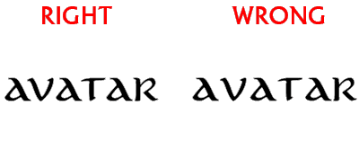
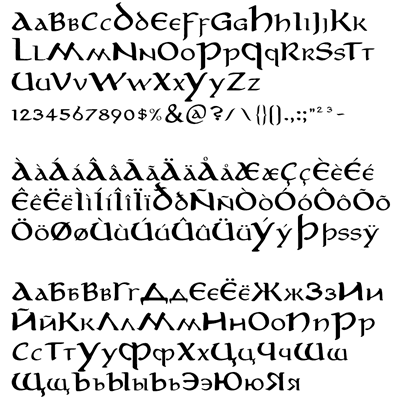

© Pete Klassen, 2004. All Rights Reserved.
Für Anregungen, Fragen, Kontakt: thehutt@gmx.net
Englische Version Russische Version
Über diesen Font
Der Aniron Font ist eine Replikation des Fonts, der im Vorspann und Abspann der Filmtrilogie "Der Herr der Ringe" von Peter Jackson verwendet wird. Es wurde erstellt, indem die Charaktere im Abspann analysiert wurden, ebenso wie die Zeichen der "Herr der Ringe" SEE-DVDs, wo diese Schriftart ebenfalls sehr oft verwendet wird.
Da die Auflösung der DVD nicht ausreicht, musste ich die Zeichen von Hand nachtracen. Außerdem mußten einige Zeichen neu kreiert werden, ebenso wie Punktuation, Ziffern und einige anderen Zeichen. Außerdem wurde ein kyrillischer Zeichensatz von Grund an neu gemacht.
Der Font enthält die folgenden Zeichentabellen:
- Lateinisches Alphabet (Das übliche)
- Erweiterter Western-Zeichensatz (Akzente und Umlaute wie í, ä)
- Kyrillischer Zeichensatz (Russisches Alphabet)
- Zahlen, Punktuation etc.
Um zu erfahren, wie man den kyrillischen Zeichensatz im Photoshop benutzt, siehe unten.
Installation
Dieser Font ist zur Benutzung mit Windows-Systemen entworfen worden. Um den Font zu installieren, entpacken Sie die ZIP-Datei in ein Verzeichnis auf ihrer Festplatte. Starten Sie Systemsteuerung, Schriftarten, Datei->Neue Schriftart installieren, und wählen Sie das Verzeichnis aus, in das Sie das Archiv entpackt haben. Sie sollten zwei Fonts sehen: "Aniron" und "Aniron Bold". Nach einer erfolgreichen Installation ist der Aniron Font verfügbar.
Verwendung
Sie können den Aniron Font für Überschriften ebenso wie für Mengentext verwenden. Es wurden ein paar Maßnahmen getroffen, um sicherzugehen, daß es in beiden Fällen gut aussieht und gut lesbar ist.
Die Unicode-Version von Aniron enthält 2660 Kerning-Paare. Wenn Ihre Anwendung Kerning nicht unterstützt, wird das Ergebnis um einiges schlechter aussehen:

Wie Sie sehen können, ist der Abstand zwischen "AV" und "AT" am rechten Beispiel zu groß. Beispielsweise scheint Winword Kerning nicht zu unterstützen. Grafikprogramme wie Photoshop, Illustrator, Corel Draw hingegen schon.
Die Großbuchstaben sind um den Faktor 150% größer, als die Kleinbuchstaben. Im Filmabspann werden Großbuchstaben gar nicht verwendet. Es gibt jedoch Großbuchstaben im Bonusmaterial der LotR DVDs, von da stammt auch das Größenverhältnis.
Außerdem ist zu beachten: um den Look des Fonts im Bonusmaterial zu erreichen, muß der Aniron Font vertikal um 120% gestreckt werden.
Über die kyrillische Version
Der Font enthält hauptsächlich zwei Unicode-Tabellen: die westliche (mit den Akzentbuchstaben) und die kyrillische (Russische Buchstaben). Der Hauptvorteil von Unicode hierbei ist die Möglichkeit, Kyrillische Zeichen zu verwenden, ohne auf Akzente verzichten zu müssen - denn diese sind den westlichen Benutzern vermutlich wichtiger. Um Kyrillisch in Unicode-Programmen verwenden zu können (z.B. Microsoft Word), genügt es, die Tastaturbelegung auf Russisch umzustellen. Dann wird automatisch der kyrillische Zeichensatz ausgewählt.
Unglücklicherweise funktioniert das nicht auf älteren Betriebssystemen (so wie Windows 9x) bei Programmen, die kein Unicode unterstützen. Außerdem, und das ist wichtiger, die Unicode-Unterstützung scheint nicht immer reibungslos in Photoshop zu funktionieren. Deswegen, wenn Sie in Photoshop kyrillische Zeichen eintippen, werden stattdessen möglicherweise Akzentbuchstaben angezeigt.
Deswegen habe ich ein nur-kyrillisches Extrapaket des Aniron Font, AnironC, erstellt. Der einzige Unterschied ist - es enthält keine Akzentzeichen. Stattdessen werden anstelle der Akzentzeichen das kyrillische Zeichensatz nochmal dupliziert - zusätzlich zur kyrillischen Unicode-Tabelle. Sie können AnironC separat von meiner website herunterladen.
Anmerkung: Sie brauchen AnironC nur, wenn der normale Aniron nicht auf Ihrem System funktioniert und Sie kyrillische Buchstaben brauchen.
Fontbeispiel

Copyright Disclaimer
Der Aniron font ist © Pete Klassen, 2004. Alle Rechte vorbehalten.
Es ist erlaubt, diese Schriftart ausschließlich kostenfrei zu verbreiten, und auch nur inklusive des kompletten Inhalt des Original-Archivs.
Die Benutzung dieses Fonts ist im ausschließlich privaten Rahmen gestaltet. Gewerbliche Verwendung und/oder Veränderungen an dem Font sind nicht gestattet.
Aniron Font basiert auf dem Font aus dem "Lord of the Rings" Abspann. "Aníron" ist ein Song von Enya aus dem ersten "Herr der Ringe"-Film und bedeutet auf Elbisch "Ich begehre". "The Lord of the Rings" Filmtrilogie ist © 2001-2003 New Line Cinema und Wingnut Films. Alle Rechte vorbehalten.
PS: es ist nur ein anderer Font von einem Fan für andere Fans.